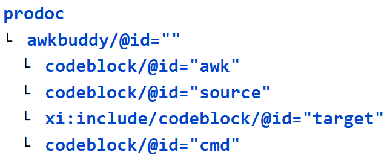

<awkbuddy/>
— An interactive development environment blockOne day, dreaming about the keyboard macro processors, I thought, “AWK! of course, AWK!” The result is <awkbuddy/>, which inverts most code/ documentation conventions by putting code fragments into a standard prodoc.
Figure 14. <awkbuddy/> codeblocks
|  |
The code blocks can be arranged, as desired, to co-locate knowledge with decisions. I've tuned mine on eye movements, by wrapping the codeblocks in table structures. The awkbuddy.cmd script rips the prodoc into separate files and runs the pipeline. Factoring out the file-processing overhead made AWK a much more convenient tool. More little bots have been built. Much time saved. Much more complexity managed.
Perhaps more importantly, it improves knowledge retention and library accessibility. Simply having the code and a source fragment is usually sufficient to remember the project. On the other hand, if you want to write a novel to explain a few lines of AWK, the tools are at hand.
Custom IDs can be used to run multiple awkbuddies from the same prodoc and prevent collisions in the generated files. File-level collisions across separate awkbuddies (*.abud) never proved to be much of an issue. If the default target fragment has been overwritten, just rerun the transform.